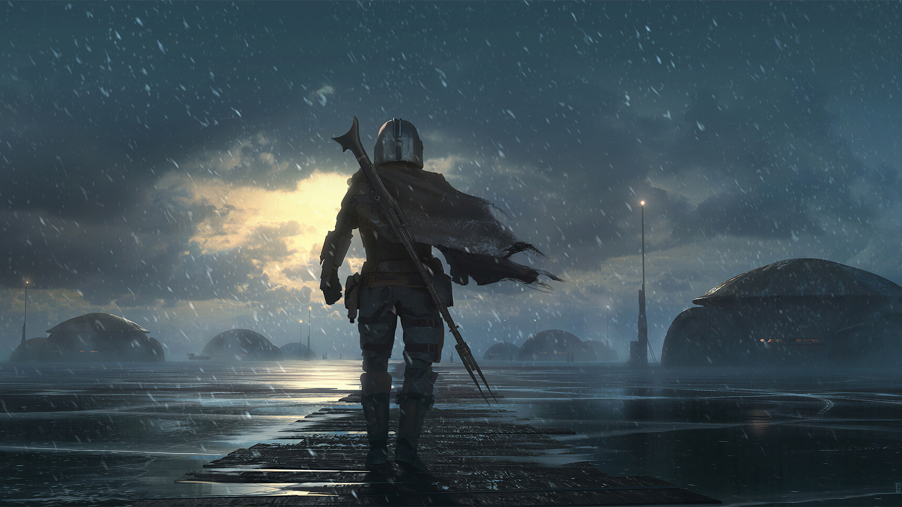

Grogu

Grogu, conocido por muchos simplemente como "El Niño", fue un niño mandaloriano sensible a la Fuerza que pertenecía a la misma especie que el Gran Maestro Jedi Yoda y la Maestra Jedi Yaddle.
Din Djarin

Din Djarin, también conocido como "el Mandaloriano" o "Mando" para abreviar, fue un cazarrecompensas mandaloriano humano durante la Era de la Nueva República.
Ahsoka Tano

Ahsoka Tano fue una mujer Togruta sensible a la Fuerza que fue la Padawan del Caballero Jedi Anakin Skywalker y una heroína de las Guerras Clon.